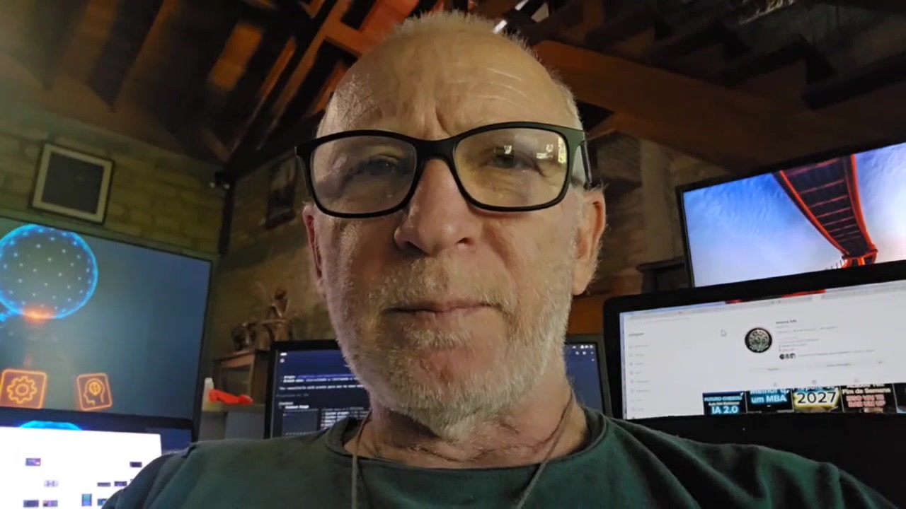
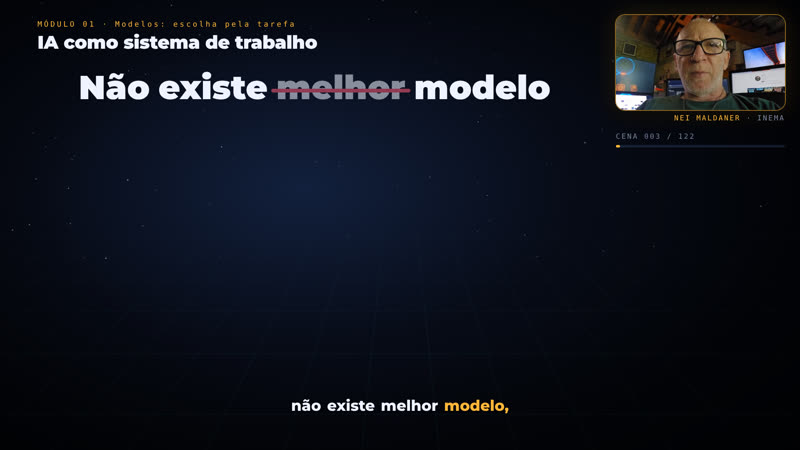
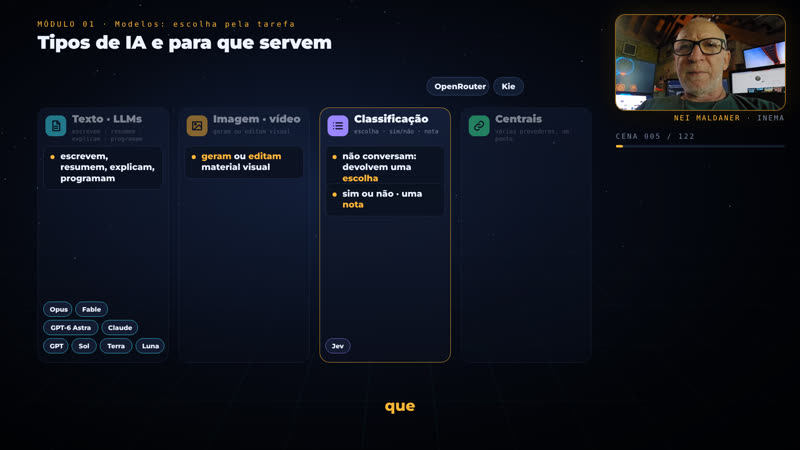

O processo usado no Astra e no OSWork Quick, organizado para produzir novas explicações com avatar, ilustrações e legendas.

Roteiro, geração, montagem e entrega têm estados e arquivos próprios.
Cada tópico aponta para sua fonte e suas cenas. O OSWork tem cobertura dos 48 tópicos, exemplos e exercícios.
O template aprovado do HeyGen preserva avatar e voz. Ilustrações acompanham os tempos medidos da fala.
Áudio, duração, legendas e reprodução são conferidos antes do MP4, player e aviso no bot v3.
Scripts cuidam das etapas repetitivas. Revisão editorial e visual acontece antes de escalar.
Esta versão usa o ambiente INEMA. Para outra máquina, ajuste os caminhos da configuração e dos adaptadores.
Python, Node, FFmpeg, GitHub CLI, systemd, perfil autenticado no HeyGen e credenciais de consulta/transcrição carregadas em runtime.
# comando
python3 --version
node --version
ffmpeg -version
gh auth statusO exemplo OSWork já está preparado. Em uma execução iniciada, consulte status em vez de gerar outro manifesto.
Copie a configuração para um novo projeto e revise fonte, destino e idioma. Cada etapa preserva seus resultados.
python3 explica.py --config examples/oswork.json status # mostra geração, downloads, render e publicação
Somente antes de iniciar a geração.
python3 explica.py --config examples/oswork.json prepare
Prévia sem áudio para conferir os diagramas.
python3 explica.py preview python3 engine/check_layouts.py
Cinco serviços persistentes continuam após fechar o terminal.
python3 explica.py start
Estados e logs mostram o que ocorreu de fato.
python3 explica.py status journalctl --user -u explica-oswork-completo-submit -n 20 --no-pager
No v2, cada cena tem um roteiro visual com deixas faladas: quando a fala diz "entrada, modelo, saída", o fluxo aparece; quando diz "não existe melhor modelo", o pódio desmorona e o radar de critérios encaixa o modelo adequado. O avatar e o áudio são reaproveitados, sem nova geração no HeyGen.

hub, pipeline, fluxo, radar, pódio, trilhas, comparação, chat, terminal, árvore de pastas, ficha, laboratório, quiz, linha do tempo e mais, em engine/v2/runtime.

O roteiro usa trechos literais da fala; o build resolve cada deixa pela transcrição real e acusa lacunas acima de 10 s. A legenda usa a grafia do roteiro.
O motor v1 (explica.py, engine/*.py) segue igual e continua disponível para produções e melhorias. A versão anterior do OSWork fica no release video-v1.0.0.
# roteiro visual: <output>/visual-v2/pt-bNN.json (ver engine/v2/AUTHORING.md) export EXPLICAVIDEOS_CONFIG=examples/oswork-v2.json python3 engine/v2/setup_output.py # reaproveita avatar, transcrição e tempos do v1 python3 engine/v2/build_block.py 1 --strict # deixas → tempos; 0 avisos engine/v2/run_lane.sh 1 2 3 # check + render verificado por bloco python3 engine/assemble_languages.py && python3 engine/publish_finished.py
Produções concluídas que servem de referência. O OSWork completo é a primeira aplicação deste novo motor.
Oito módulos, 48 tópicos, 122 cenas e 14 blocos de voz em português. A duração final depende do áudio real.